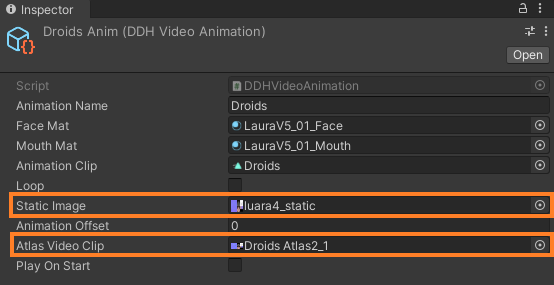
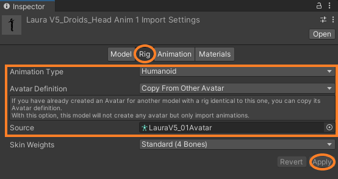
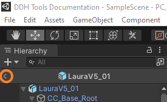
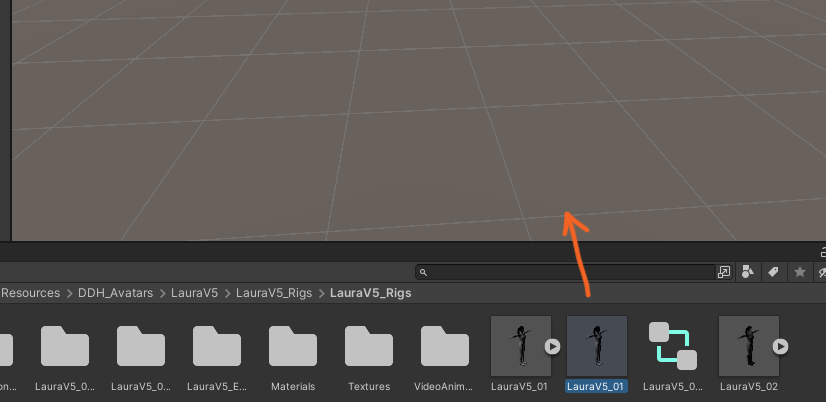
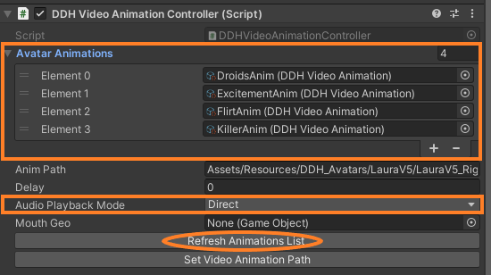
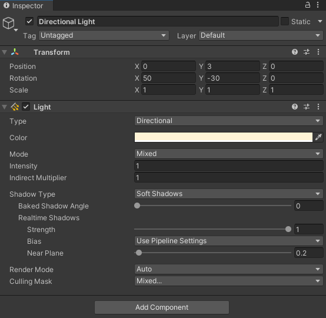
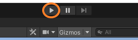
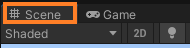
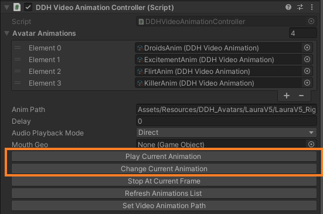

Dynamic Digital Humans Documentation
Setting up video animations
1. Navigate to the video animations chosen during prefab creation in the Project Menu by going to Assets>Resources>DDH_Avatars>LauraV5>LauraV5_Rigs>VideoAnimations
2. For each animation, in the Inspector menu, if the Static Image has not been automatically set, change the Static Image from None to the screen capture taken during Step 8 of Creating An Avatar Prefab
3. Also, change the Atlas Video Clip from None to the appropriate video clip (video clip should match the atlas layout (normal or albedo map) of the static image chosen)
4. In the Project Menu, go to Assets>Resources>DDH Avatars>LauraV5>Animations. For the animations that were chosen during the prefab creation, click on the corresponding .fbx animation file. In the Inspector menu, click the Rig tab and change the Animation Type to Humanoid and change the Avatar Definition to Copy from other avatar.
A Source setting will appear; change the Source from None to the Avatar created (ex. LauraV5_01Avatar). Click Apply to set changes. Repeat this step for all animation files chosen
5. If you are not already in the SampleScene, return to it by clicking the back arrow in the Hierarchy menu
6. In the Project Menu, navigate to Assets>Resources>DDH_Avatars>LauraV5>LauraV5_Rigs, select the Prefab Asset created and drag it into the SampleScene
7. Click on the Prefab Asset in the SampleScene. In the Inspector menu, under DDH Video Animation Controller (Script), click Refresh Animations List. Expand the Avatar Animations option to view the animations.
8. Change the Audio Playback Mode from Spatialized to Direct
9. Adjust the angle and position of the character model to the desired view that will be shown when animations are played. Lighting settings can be adjusted by selecting Directional Light in the Hierarchy menu. Adjust the settings as needed (ex: turning of shadows by setting Shadow Type to No Shadows)
10. Press the Play button at the top of the screen to launch the scene
11. Unity will automatically switch to the Game tab. Switch back to the Scene tab
12. In the Hierarchy menu, select the Prefab Asset
13. In the Inspector menu, under DDH Video Animation Controller (Script), click Play Current Animation to play the first animation in the Avatar Animations list (Element 0). Click Change Current Animation to move to the next animation
14. The animation that will be played when Play Current Animation is clicked and displayed under Current Animation in the DDH Animation And Video Sync (Script)
 15. If an animation does not seem to be synced properly, in the Project Menu, go to Assets>Resources>DDH_Avatars>LauraV5>LauraV5_Rigs>VideoAnimations and select the specific animation and adjust the Animation Offset as needed
Validation
After setting the video animations, validate the Unity playback by using the video sequence from faceware retargeter. This step ensures that the animations are being correctly played within Unity.
Validate Animations with these links to animation reviews:
Adding new video animations
If additional video animations are created within the Video Animations directory after the avatar prefab has been created, ensure to name the Video Animation as per their animation name.
1. Within the Video Animations directory, right click, Create > DDH > Animation > Video Animation
2. Rename the Video Animation in accordance with the animation clip name
3. Drag/search for the Face and Mouth materials, Animation Clip, Static Image, and Atlas Video Clip required for the avatar's video animation
4. Select the avatar prefab and in the Inspector menu, click Refresh Animation List under the DDH Video Animation Controller script and the new Video Animation should appear within the Avatar Animations list